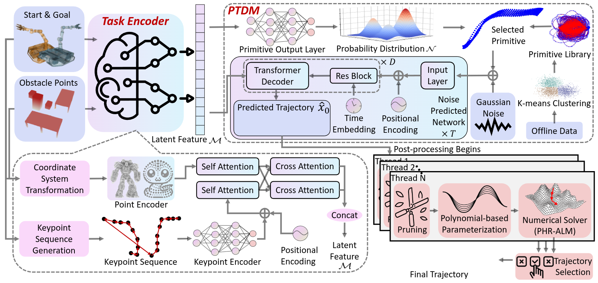

About Me

I am now a Ph.D. student in Robotics, Zhejiang University, working with Prof. Fei Gao.
I obtained my B.Eng. of Automation at Zhejiang University in 2022.
My research interests include motion planning, robot learning and mobile manipulator.
I am always happy to chat or collaborate with people with different backgrounds. If you are interested in my work, please feel free to reach out!
My work mainly focuses on motion planning for multi-articulated robots and on uneven terrain, towards more efficient, intelligent, and robust.
In future, my research will focus on whole body manipulation and interactive navigation.
- Google Scholar: CLICK HERE
- Twitter: CLICK HERE
- Email: xulon666@gmail.com
Honors and Awards
- 1st prize at RoboMaster 2022 University AI Challenge, 2022
- Zhejiang Government Scholarship (top 3%), 2020
- First Academic Scholarship (top 3%), 2019
Talks & Presentations
SF-TIM: A Simple Framework for Enhancing Quadrupedal Robot Jumping Agility by Combining Terrain Imagination and MeasurementInternational Conference on Intelligent Robots and Systems (IROS), Hangzhou, China, Oct. 2025 |
|
An Efficient Trajectory Planner for Car-like Robots on Uneven TerrainInternational Conference on Intelligent Robots and Systems (IROS), Detroit, USA, Oct. 2023 |
Researches
†Equal Contribution, *Project Leader
|
Learning Trajectory Generation on Uneven Terrain with Differentiable Trajectory Optimization and Manifold
L. Xu†, Z. Hou†, F. Gao On-going project. Optimal and efficient trajecotory generation on uneven terrain with differentiable trajectory optimization and manifold. |
|
|  |
Primitive-based Truncated Diffusion for Efficient Trajectory Generation of Mobile Manipulators
L. Xu†, C. Wong†, F. Gao On-going project. Diverse and efficient trajectory generation for mobile manipulator with primitive-based truncated diffusion. |
|
|
TopAY: Efficient Trajectory Planning for Differential Drive Mobile Manipulators via Topological Paths Search and Arc Length-Yaw Parameterization
L. Xu†, C. Wong†, M. Zhang, J. Lin, F. Gao arXiv:2507.02761 Paper / Code 
A classical trajectory planner for differential drive mobile manipulator. |

|
Tracailer: An Efficient Trajectory Planner for Tractor-Trailer Robots in Unstructured Environments
L. Xu, K. Chai, B. An, J. Gan, Q. Wang, Y. Zhou, X. Li, J. Lin, Z. Han, C. Xu, Y. Cao, F. Gao IEEE Transactions on Automation Science and Engineering (T-ASE), 2025 Paper / Video / Code 
A real-time trajectory planner for tractor-trailer robots in unstructured environments. |
|
|
Dynamically Feasible Trajectory Generation with Optimization-Embedded Networks for Autonomous Flight
Z. Han†, L. Xu†, L. Pei, F. Gao IEEE Robotics and Automation Letters, 2025. Paper / Video / Web Differentiable optimization layer can contribute to end-to-end UAV trajectory generation. |
|
|
SF-TIM: A Simple Framework for Enhancing Quadrupedal Robot Jumping Agility by Combining Terrain Imagination and Measurement
Z. Wang, Y. Li, L. Xu*, H. Shi, Z. Ma, Z. Chu, C. Li, F. Gao, K. Yang, K. Wang IEEE/RSJ International Conference on Intelligent Robots and Systems (IROS), 2025 Paper / Web A simple framework for enhancing quadrupedal robot jumping agility. |
|
Real-time Spatial-temporal Traversability Assessment via Feature-based Sparse Gaussian Process
S. Tan†, Z. Hou†, Z. Zhang†, L. Xu*, M. Zhang, Z. He, C. Xu, F. Gao, Y. Cao IEEE/RSJ International Conference on Intelligent Robots and Systems (IROS), 2025 Paper / Code 
A real-time traversability assessment via feature-based sparse Gaussian process. |
|
|
|
SEB-Naver: A SE(2)-based Local Navigation Framework for Car-like Robots on Uneven Terrain
X. Li†, L. Xu†, X. Huang†, D. Xue, Z. Zhang, Z. Han, C. Xu, Y. Cao, F. Gao IEEE/RSJ International Conference on Intelligent Robots and Systems (IROS), 2025 Paper / Video / Code 
Real-time SE(2)-based local navigation framework for car-like robots on uneven terrain. |
|
|
LF-3PM: a LiDAR-based Framework for Perception-aware Planning with Perturbation-induced Metric
K. Chai†, L. Xu†, Q. Wang, C. Xu, P. Yin, F. Gao IEEE/RSJ International Conference on Intelligent Robots and Systems (IROS), 2024 Paper / Video / Code 
Robots with limited FOV can avoid some localization-unfriendly space when navigation. |
|
|
An Efficient Spatial-Temporal Trajectory Planner for Autonomous Vehicles in Unstructured Environments
Z. Han†, Y. Wu†, T. Li, L. Zhang, L. Pei, L. Xu, C. Li, C. Ma, C. Xu, S. Shen, F. Gao IEEE Transactions on Intelligent Transportation Systems (T-ITS), 2023 Paper / Video / Code 
A trajectory planner based on differential flatness for car-like robot. |

|
Decentralized Planning for Car-Like Robotic Swarm in Cluttered Environments
C. Ma, Z. Han, T. Zhang, J. Wang, L. Xu, C. Li, C. Xu, F. Gao IEEE/RSJ International Conference on Intelligent Robots and Systems (IROS), 2023 Paper / Video / Code 
A trajectory planner for car-like robots swarm. |

|
An Efficient Trajectory Planner for Car-like Robots on Uneven Terrain
L. Xu, K. Chai, Z. Han, H. Liu, C. Xu, Y. Cao, F. Gao IEEE/RSJ International Conference on Intelligent Robots and Systems (IROS), 2023 Paper / Video / Code 
A trajectory planner for car-like robots on uneven terrain. |
|
|
Towards Efficient Trajectory Generation for Ground Robots beyond 2D Environment
J. Wang†, L. Xu†, H. Fu, Z. Meng, C. Xu, Y. Cao, X. Lyu, F. Gao IEEE International Conference on Robotics and Automation (ICRA), 2023 Paper / Video / Code 
A trajectory planner for ground robots beyond 2D environment. |